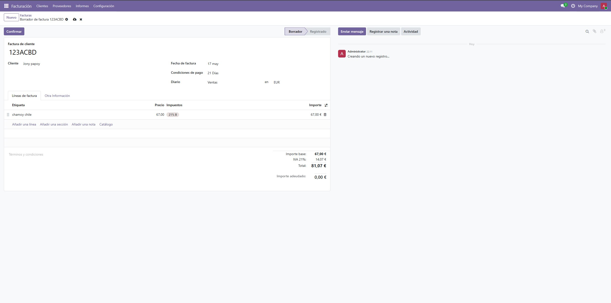
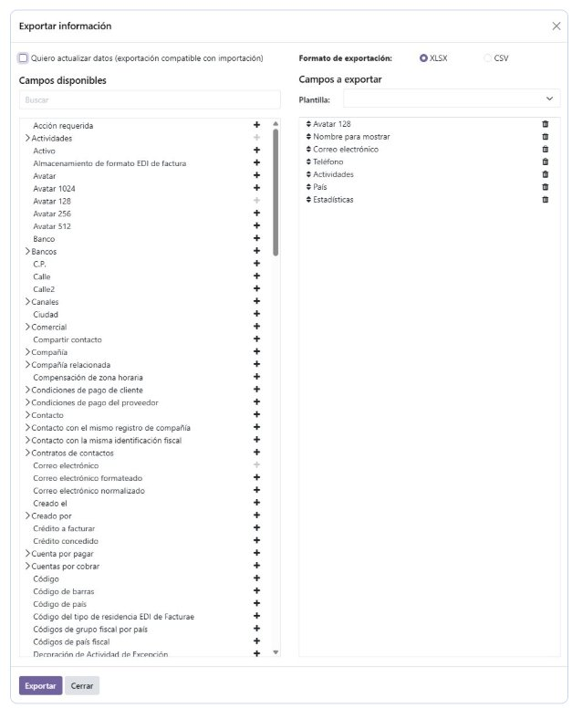
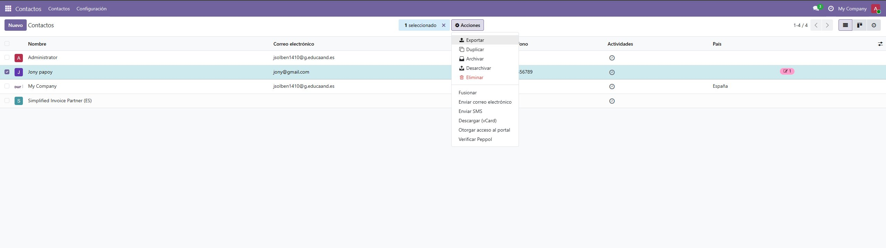

Informes y exportación de datos
Odoo incorpora herramientas para obtener información de forma rápida desde prácticamente cualquier módulo. Los resultados pueden presentarse como documentos PDF listos para imprimir o compartir, o bien como vistas interactivas dentro de la propia aplicación para el análisis en tiempo real.
Generación de documentos PDF
Desde cualquier registro, como por ejemplo una factura, está disponible el botón Imprimir, que genera un PDF con los datos de la empresa y del destinatario. El diseño visual del documento puede personalizarse desde Ajustes → Empresas → Configurar diseño del documento, donde se puede ajustar la plantilla, los colores corporativos y el logotipo.

Vistas Gráfico y Pivot
La mayoría de listados permiten cambiar la vista a Gráfico o Pivot usando los iconos de la barra superior. Son útiles para obtener análisis inmediatos sin necesidad de exportar datos: evolución de ventas por período, facturación agrupada por vendedor, desglose por producto, etc.
Exportación de registros
Cualquier listado de Odoo puede exportarse siguiendo el mismo procedimiento en todos los módulos:
- Abrir el listado correspondiente (por ejemplo, Contactos o Ventas).
- Marcar los registros deseados usando la casilla de la cabecera para seleccionar todos.
- Elegir el formato de salida: XLSX o CSV.
- Seleccionar los campos que se quieren incluir en el archivo.
- Hacer clic en Acciones → Exportar.
- Confirmar con el botón Exportar y guardar el archivo descargado.


Si se activa la opción «Quiero actualizar datos (importación-compatible)», el archivo resultante incluye los identificadores externos necesarios para poder reimportar los registros posteriormente.
Otros métodos de acceso a los datos
- Acceso directo a PostgreSQL: permite realizar consultas SQL sobre la base de datos (solo lectura recomendada).
- API XML-RPC / JSON-RPC: posibilita la integración de aplicaciones externas con Odoo mediante llamadas remotas.